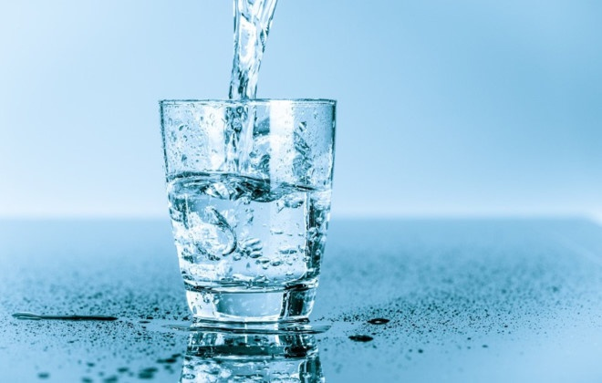

Clean water sources are gradually running out, replaced by polluted water !!!
1.What is clean water-The importance of clean water
Clean water is transparent water, colorless, odorless, tasteless, does not contain microorganisms or solutes harmful to human health. It is a valuable resource, but not endless. Water is essential to life, but when altered, pollution can cause immeasurable hazards
Read more...2.Current situation of clean water in Vietnam and in the world
a) All around the world
Although more than 70% of the Earth's surface is covered by water with an amount of about 1.38 billion km³, of which 97.4% is salt water in the world's oceans, 2.6% is water Sweet (exists mainly in the form of snow and ice at the poles) but only 0.3% of the world's water (or 3.6 million km³) can be used as drinking water (clean water).
b) In Vietnam
In industrial zones with hundreds of manufacturing units, tons of untreated waste water have been discharged directly into pipes, organic pollutants, intact domestic metals have penetrated into water sources.
Read more...3.Concept of water pollution & Causes of water pollution
a) Water pollution
Water pollution is the state of water invaded by toxic substances. They are formed from activities of production and human activities.
b) Causes of water pollution
Every day, a large amount of domestic waste from households, hospitals, hotels, schools and agencies, containing wastes in the daily life and sanitation of people is discharged into the environment without handling. In developed countries, the population growth rate is about 5% while the population growth rate in developing countries is over 2%.
+ From agricultural production
+ From industrial production
+ From the natural impact on the water environment
Read more...4.Some measures to protect the clean water source
a) In the family:
To limit the pollution of water sources affecting health, every family must have simple water treatment measures such as water filtration. Especially, each person must have a awareness of protecting the water source
b) Globally:
Existing freshwater resources on earth are also threatened by overuse and pollution. These causes have a terrible impact on people and the ecosystem. In this regard, the participation of civil society plays an essential part.
Read more...Main content of the page
- -Concept of clean water and its role
- -Real situation of clean water around the world and in Vietnam
- -Concept of polluted water and its causes
- -Remedy for polluted water
Page information
-
 Overview
Overview
-
 Suggestion box
Suggestion box
-
 Telephone number: 0706893807
Telephone number: 0706893807